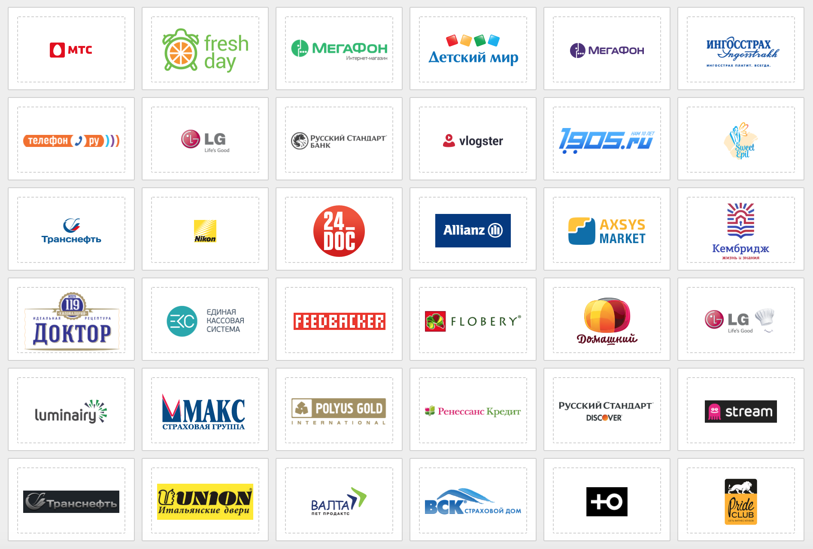
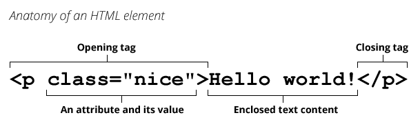
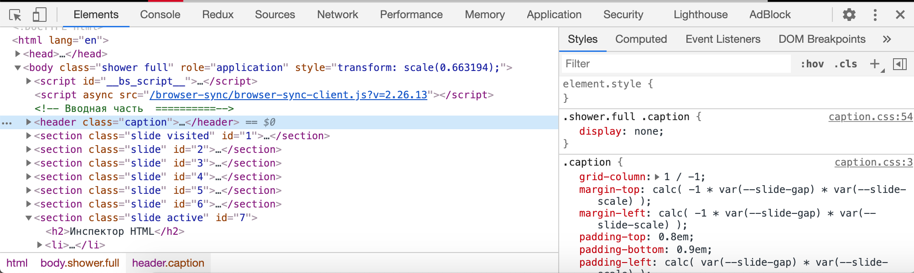

HTML и CSS
Леонид Феськов
Обо мне
- Леонид Феськов
- Старший фронтенд разработчик
- Занимаюсь web-разработкой с 2011 года

План (он у нас есть и мы будем его придерживаться)
-
Лекция – часть 1
-
Лекция – часть 2
- CSS-свойства
- Адаптивная верстка
- CSS-препроцессоры
- Практическое занятие
- Домашнее задание
Верстка web-страниц

➡️
Почему верстка важна
- Это то, что увидят пользователи
- Это основа интерфейсов
- Это то, с чем будете работать вы и ваши коллеги
HTML
HyperText Markup Language
— стандартизированный язык разметки документов, который определяет, как и какие элементы должны располагаться на веб-странице.
был разработан британским учёным Тимом Бернерсом-Ли приблизительно в 1986—1991 годах
HTML дескриптор (тег)

Проверка кода на валидность
Атрибуты
– позволяют изменять свойства и поведение элемента, для которого они заданы
- Обязательные
- Необязательные
- Пользовательские
DOM (Document Object Model)

Инспектор HTML
- Правой кнопкой ➡️ Inspect Element / Просмотреть код
- Mac ➡️
Cmd + Alt + I или F12
- Windows, Ubuntu ➡️
Ctrl + Shift + I или F12

HTML теги
- Строчные
- Блочные
- Строчно-блочные
Особенности разных типов тегов
-
Строчные теги располагаются рядом на одной строке.
Блочные теги располагаются друг под другом.
-
Разная модель визуального форматирования CSS
-
Нельзя вкладывать блочные теги в строчные
Рекомендации по написанию HTML
- Продумывайте структуру HTML-кода
- Указывайте doctype
- Пишите валидный HTML-код (validator.w3.org)
- Следуйте стайлгайду (например Google HTML/CSS Style Guide)
- Используйте теги по назначению
- Учитывайте доступность интерфейсов
Разделение структуры и внешнего вида

Преимущества
- Простота последующего изменения дизайна
- Несколько дизайнов страницы с одним и тем же HTML-кодом
-
Уменьшение времени загрузки страниц сайта
- кода становится меньше
- кэширование CSS-файлов в браузере
- Дополнительные возможности стилизации страниц, которых не было в HTML
CSS
(Cascading Style Sheets)
— язык таблиц стилей, который позволяет прикреплять стиль к структурированным документам (например, документам HTML и приложениям XML)
Синтаксис CSS-правила

Схема работы браузера

Типы селекторов
- Базовые селекторы
- Комбинаторы
- Псевдоклассы
- Псевдоэлементы
Наследуемые стили:
color, font, letter-spacing, line-height, list-style, text-align, text-indent, text-transform, visibility, white-space и word-spacing
Ненаследуемые стили:
background, border, display, float и clear, height и width, margin, min-max-height и -width, outline, overflow, padding, position, text-decoration, vertical-align и z-index
Каскад
проявляется в том, как разные стили применяются к HTML-документу, и как конфликтующие правила переопределяют друг друга.
Как применяются стили
- Могут быть указаны для самого элемента
- Могут наследоваться от родительского элемента
-
К одному элементу могут применяться стили от разных селекторов
- Стили, расположенные в коде ниже, переопределяют стили, расположенные выше
- Учитывается специфичность селекторов
Расчет специфичность
| Селектор |
Специфичность |
| тег, псевдо-элемент(span, ::after) |
0 0 0 1 |
| класс, псевдокласс, атрибут (.header, :hover) |
0 0 1 0 |
| идентификатор (#footer) |
0 1 0 0 |
| инлайн-стили (style="color: red;") |
1 0 0 0 |
!important
| Селектор |
Специфичность |
| тег, псевдо-элемент (span, ::after) |
0 0 0 1 0 0 0 1 |
| класс, псевдокласс, атрибут (.header, :hover) |
0 0 1 0 0 0 1 0 |
| идентификатор (#footer) |
0 1 0 0 0 1 0 0 |
| инлайн-стили (style="color: red;") |
1 0 0 0 1 0 0 0 |
.text #name div.red.small { ... }

Проблемы
.text #name div.red.small { ... }
- сложно понимать
- сложно переиспользовать
- сложно переопределить
- усложняет поиск селекторов браузерами
- лишние селекторы
Решение
- Используйте селекторы классов
- Повышайте специфичность в крайнем случае
- БЭМ методология